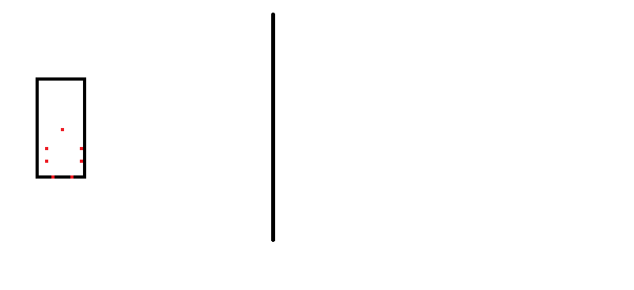

All you have to do is open the patch LevelExtend.asm, change the defines if necessary, then use Asar to patch it into your game.
Very likely if you need only the top and bottom blocks to be interacted when the player is above or below the level, since the sides of the level cannot be bypassed anyway (the screen have 8 pixels wide zone on either side that are solid to the player).
Not to be confused with the screen constrain patch, which only limits the player's object collision to the borders of the screen and not the level, which that is prone to issues if you deliberately want the player offscreen and the screen scrolls and positioned so that the block on the edge of the screen is where the player's hitbox is at and kills him.
However, if you are here just to understand how this patch works, well it works like this towards the player (going past the right edge of the level with
the level border represented as a black vertical line, with “Disable Screen Barrier via RAM” patch installed):

The green box is the “actual” player position. The dots in the black box represent the collision points, the way how SMW
detects collision with objects is by checking if a given point is in one of the squares of the 16x16 grid. When the player's body goes past the level border,
it will be clamped along the border of the level. All collision points will stop together as one if his position ($7E0094 and $7E0096)
happens to be out of bounds.
For sprites, it is the same, but the collision points are stopped individually (all collision points will stop at the same X or Y position as the line rather than stopping
all of them at their current position when one is at the border). Why? Well it is because not all sprites have the same object collision positions and all of them will have
way more collision fields than the player. If it was similar to the player, big sprites may interact with a line of blocks (both horizontal and vertical) that are
not at the level edge:

Essentially, any block placed at the border, including layer 2, will be interacted with when the player and/or sprite is outside the level boundaries. Good for preventing the player or sprite from flying or swimming under or over the level (placing solid blocks at the border will also be solid outside the level boundaries and beyond). A good alternative to my pit fix or a Bottomless Pit Code that simply zero out the player's X speed for being above and below the level even when not being above or under a solid block acting as a wall.
This is also useful for making custom blocks do special things to the player when leaving the edge of the level (rather than 1 or 2 blocks away from the outside of the level), as demonstrated with my “edge level blocks” pack (which makes it look like the user have placed teleport blocks just past the right edge of the level).